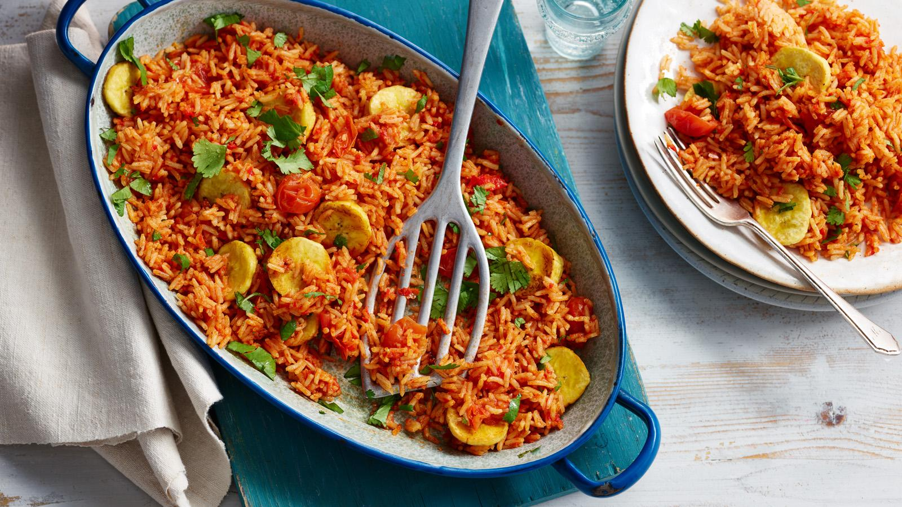

Tasty Meals You Can Trust
Vickies Tasty Kitchen promises to offer you the best experience while enjoying your favorite Nigerian delicacies. Tasty meals that you can not get enough of make sure to check our menu.

Vickies Tasty Kitchen promises to offer you the best experience while enjoying your favorite Nigerian delicacies. Tasty meals that you can not get enough of make sure to check our menu.

Eating should be a lovely experience and Vickies Tasty Kitchen is part of a larger movement to make delicious food as our part to give you that experience you deserve. At the restaurant, we are creating a healthy space for you to enjoy your favorite meals and Order and Delivery services are available at your convinience.
We know you have aroused enough. Time for you to act.